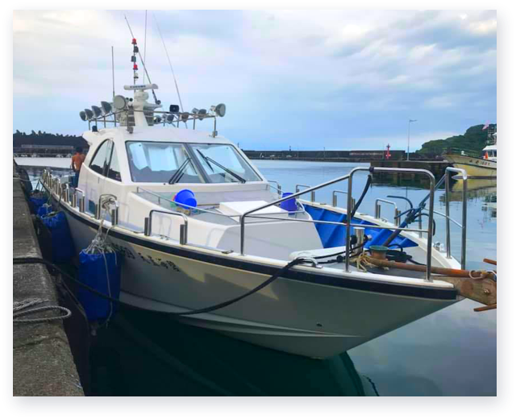

釣魚方法知多少 四種基隆在地休閒垂釣的入門知識
說到靜態的海上活動，最先讓人想到的，就是釣魚了。很多人都去過釣蝦場，或曾經坐船出海體驗夜釣小管的活動，但是對於真正的釣魚，想必不是所有人都嘗試過。其實釣魚是藏有許多學問的喔！從釣魚的釣點、餌食、裝備、水溫、洋流、時節和釣魚的方法等，都......
觀看全文

說到靜態的海上活動，最先讓人想到的，就是釣魚了。很多人都去過釣蝦場，或曾經坐船出海體驗夜釣小管的活動，但是對於真正的釣魚，想必不是所有人都嘗試過。其實釣魚是藏有許多學問的喔！從釣魚的釣點、餌食、裝備、水溫、洋流、時節和釣魚的方法等，都......
觀看全文